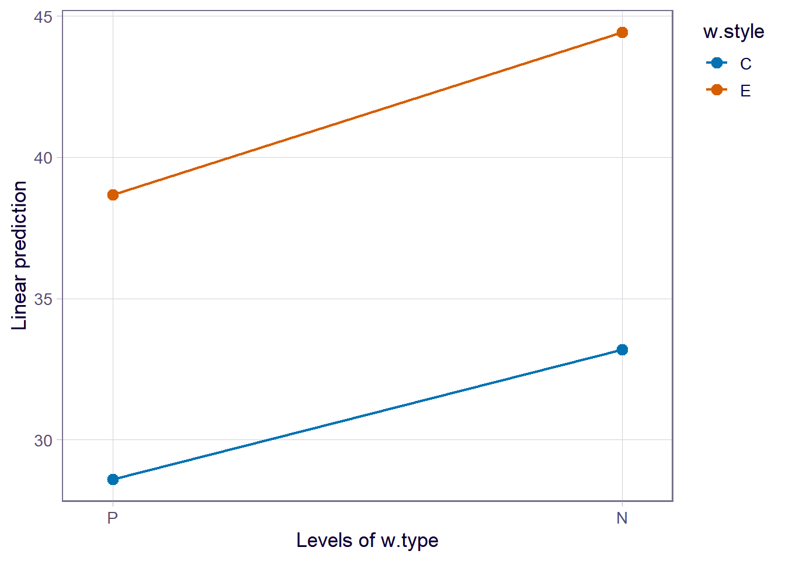
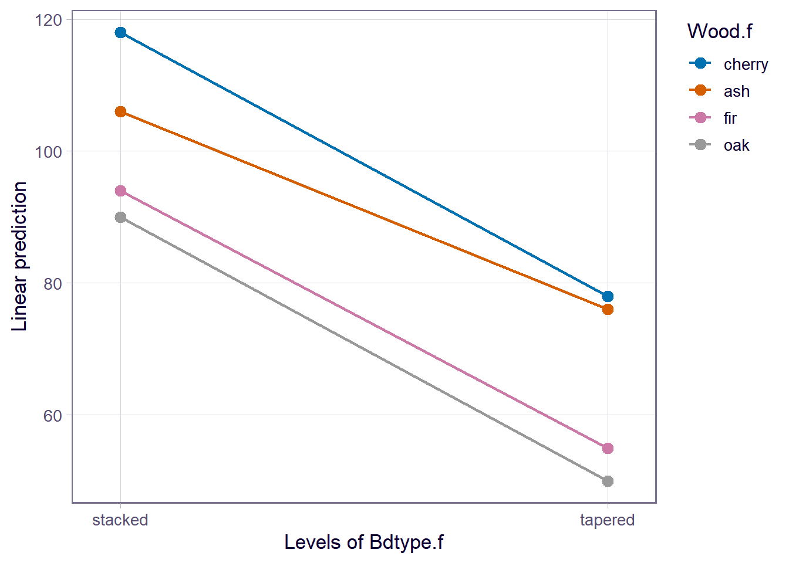

Chapter 8 Unbalanced Two-Factor Analysis of Variance
When sample sizes are not all equal, the sums of squares cannot be obtained simply among the cell, marginal, and overall means. Even in well planned controlled experiments, observations may not be used due to malfunction or subjects dropping out. In observational studies, it may not be feasible to get equal number of units from the various sub-populations.
The model can be fit based on regression models in scalar and matrix form. In this chapter, we describe the process based on the treatment effects model. The balanced case can be formed in this manner as well.
8.1 Statistical Model and the Analysis of Variance
\[ Y_{ijk}=\mu_{\bullet\bullet}+\alpha_i+\beta_j+(\alpha\beta)_{ij}+\epsilon_{ijk}\qquad i=1,\ldots,a; \quad j=1,\ldots,b; \quad k=1,\ldots,n_{ij}\] \[\epsilon_{ijk} \sim NID\left(0,\sigma^2\right) \]
\[ n_{i\bullet} = \sum_{j=1}^b n_{ij} \quad n_{\bullet j} = \sum_{i=1}^a n_{ij} \quad n_T=\sum_{i=1}^a\sum_{j=1}^b n_{ij} \qquad Y_{ij\bullet}=\sum_{k=1}^{n_{ij}}Y_{ijk} \quad \overline{Y}_{ij\bullet} = \frac{Y_{ij\bullet}}{n_{ij}} \]
\[ \sum_{i=1}^a\alpha_i = \sum_{j=1}^b\beta_j = \sum_{i=1}^a(\alpha\beta)_{ij} = \sum_{j=1}^b(\alpha\beta)_{ij} = 0 \] \[ \alpha_a=-\sum_{i=1}^{a-1}\alpha_i \qquad\qquad \beta_b = -\sum_{j=1}^{b-1}\beta_j \] \[ (\alpha\beta)_{aj}=-\sum_{i=1}^{a-1}(\alpha\beta)_{ij} \quad j=1,\ldots,b \qquad (\alpha\beta)_{ib}=-\sum_{j=1}^{b-1}(\alpha\beta)_{ij} \quad i=1,\ldots,a \]
To fit this model, construct \(a-1\) \(X\) variables for the factor A effects, \(b-1\) \(X\) variables for the factor B effects, and then obtain the \((a-1)(b-1)\) cross-products of these variables for the interaction effects.
\[ X_{ijk1}^A=\left\{ \begin{array}{r@{\quad:\quad}l} 1 & i=1 \\ 0 & i=2,\ldots,a-1\\ -1 & i=a \end{array} \right. \qquad \cdots \qquad X_{ijk,a-1}^A=\left\{ \begin{array}{r@{\quad:\quad}l} 1 & i=a-1 \\ 0 & i=1,\ldots,a-2\\ -1 & i=a \end{array} \right. \]
\[ X_{ijk1}^B=\left\{ \begin{array}{r@{\quad:\quad}l} 1 & j=1 \\ 0 & j=2,\ldots,b-1\\ -1 & j=b \end{array} \right. \qquad \cdots \qquad X_{ijk,b-1}^B=\left\{ \begin{array}{r@{\quad:\quad}l} 1 & j=b-1 \\ 0 & j=1,\ldots,b-2\\ -1 & j=b \end{array} \right. \] \[ Y_{ijk}=\mu_{\bullet\bullet} + \alpha_1X_{ijk1}^A + \cdots +\alpha_{a-1}X_{ijk,a-1}^A + \beta_1X_{ijk1}^B + \cdots + \beta_{b-1}X_{ijk,b-1}^B + \] \[ + (\alpha\beta)_{11}X_{ijk1}^AX_{ijk1}^B + \cdots + (\alpha\beta)_{a-1,b-1}X_{ijk,a-1}^AX_{ijk,b-1}^B + \epsilon_{ijk} \]
The testing strategy is done as it was in the balanced case. Fit various models and compare them using the general linear test procedure.
- Model 1 - Include main effects for factors A and B as well as interaction effects.
- Model 2 - Include main effects for factors A and B, but no interaction effects
- Model 3 - Include main effects for factor B and interaction effects, but no factor A effects
- Model 4 - Include main effects for factor A and interaction effects, but no factor B effects
To test for interaction effects, controlling for main effects for factors A and B, we compare Model 1 (Complete) and Model 2 (Reduced).
To test for factor A effects, controlling for factor B effects and interaction effects, we compare Model 1 (Complete) and Model 3 (Reduced).
To test for factor B effects, controlling for factor A effects and interaction effects, we compare Model 1 (Complete) and Model 4 (Reduced).
When the test for interaction is “very non-significant” (high \(P\)-value), often tests for factor A and B effects use Model 2 as the Complete Model.
Example 8.1 - Age at Peak for Famous Writers
A study considered the age at career peak for famous writers (Simonson 2007). The factors were Style (Factor A: Conceptualists \((i=1)\), Experimentalists \((i=2)\)) and Writer Type (Factor B:Poets \((j=1)\), Novelists \((j=2)\)). Thus, there are \(a=b=2\) levels for the factors, there will only be \(a-1=1\) \(X\) variable for factor A and \(b-1=1\) \(X\) variable for factor B, and \((a-1)(b-1)=1\) cross-product term for the AB interaction. The numbers of writers for the \(ab=4\) conditions are \(n_{11}=n_{12}=5,n_{21}=6,n_{22}=7\). The data and the generated X variables are given in Table 8.1. The regression model is fit directly, then with the aov function. Note that in the original dataset the levels were 0 and 1 for style and type, not 1 and 2.
ap1 <- read.csv("data/creativelifecycles1.csv")
knitr::kable(ap1, caption = 'Author Age at Peak Data')| author | Type | Style | ageDth | cageDth | agePeak |
|---|---|---|---|---|---|
| Eliot | 0 | 0 | 77 | 8.57 | 23 |
| Cummings | 0 | 0 | 68 | -0.43 | 26 |
| Plath | 0 | 0 | 31 | -37.43 | 30 |
| Pound | 0 | 0 | 87 | 18.57 | 30 |
| Wilber | 0 | 0 | 86 | 17.57 | 34 |
| Williams | 0 | 1 | 80 | 11.57 | 40 |
| Bishop | 0 | 1 | 68 | -0.43 | 29 |
| Moore | 0 | 1 | 85 | 16.57 | 32 |
| Lowell | 0 | 1 | 60 | -8.43 | 41 |
| Stevens | 0 | 1 | 76 | 7.57 | 42 |
| Frost | 0 | 1 | 89 | 20.57 | 48 |
| Fitzgerald | 1 | 0 | 44 | -24.43 | 29 |
| Hemingway | 1 | 0 | 62 | -6.43 | 30 |
| Melville | 1 | 0 | 72 | 3.57 | 32 |
| Lawrence | 1 | 0 | 45 | -23.43 | 35 |
| Joyce | 1 | 0 | 59 | -9.43 | 40 |
| James | 1 | 1 | 73 | 4.57 | 38 |
| Faulkner | 1 | 1 | 65 | -3.43 | 39 |
| Dickens | 1 | 1 | 58 | -10.43 | 41 |
| Woolf | 1 | 1 | 59 | -9.43 | 45 |
| Conrad | 1 | 1 | 67 | -1.43 | 47 |
| Twain | 1 | 1 | 75 | 6.57 | 50 |
| Hardy | 1 | 1 | 88 | 19.57 | 51 |
ap1$w.style <- factor(ap1$Style, levels=0:1, labels=c("C", "E"))
ap1$w.type <- factor(ap1$Type, levels=0:1, labels=c("P", "N"))
ap1$X1A <- ifelse(ap1$Style==0,1,-1)
ap1$X1B <- ifelse(ap1$Type==0,1,-1)
ap1$X1AX1B <- ap1$X1A*ap1$X1B
## Regression Model
ap.reg1 <- lm(agePeak ~ X1A + X1B + X1AX1B, data=ap1)
summary(ap.reg1)##
## Call:
## lm(formula = agePeak ~ X1A + X1B + X1AX1B, data = ap1)
##
## Residuals:
## Min 1Q Median 3Q Max
## -9.667 -3.814 1.333 2.952 9.333
##
## Coefficients:
## Estimate Std. Error t value Pr(>|t|)
## (Intercept) 36.2238 1.1402 31.769 < 2e-16 ***
## X1A -5.3238 1.1402 -4.669 0.000167 ***
## X1B -2.5905 1.1402 -2.272 0.034902 *
## X1AX1B 0.2905 1.1402 0.255 0.801652
## ---
## Signif. codes: 0 '***' 0.001 '**' 0.01 '*' 0.05 '.' 0.1 ' ' 1
##
## Residual standard error: 5.415 on 19 degrees of freedom
## Multiple R-squared: 0.5978, Adjusted R-squared: 0.5343
## F-statistic: 9.413 on 3 and 19 DF, p-value: 0.0005033## Analysis of Variance Table
##
## Response: agePeak
## Df Sum Sq Mean Sq F value Pr(>F)
## X1A 1 667.75 667.75 22.7758 0.0001324 ***
## X1B 1 158.26 158.26 5.3979 0.0314109 *
## X1AX1B 1 1.90 1.90 0.0649 0.8016516
## Residuals 19 557.05 29.32
## ---
## Signif. codes: 0 '***' 0.001 '**' 0.01 '*' 0.05 '.' 0.1 ' ' 1## Single term deletions
##
## Model:
## agePeak ~ X1A + X1B + X1AX1B
## Df Sum of Sq RSS AIC F value Pr(>F)
## <none> 557.05 81.305
## X1A 1 639.14 1196.19 96.882 21.8001 0.0001672 ***
## X1B 1 151.33 708.37 84.832 5.1615 0.0349023 *
## X1AX1B 1 1.90 558.95 79.383 0.0649 0.8016516
## ---
## Signif. codes: 0 '***' 0.001 '**' 0.01 '*' 0.05 '.' 0.1 ' ' 1## ANOVA model (Treatment effects)
options(contrasts=c("contr.sum", "contr.poly"))
ap.aov1 <- aov(agePeak ~ w.style*w.type, data=ap1)
summary.lm(ap.aov1)##
## Call:
## aov(formula = agePeak ~ w.style * w.type, data = ap1)
##
## Residuals:
## Min 1Q Median 3Q Max
## -9.667 -3.814 1.333 2.952 9.333
##
## Coefficients:
## Estimate Std. Error t value Pr(>|t|)
## (Intercept) 36.2238 1.1402 31.769 < 2e-16 ***
## w.style1 -5.3238 1.1402 -4.669 0.000167 ***
## w.type1 -2.5905 1.1402 -2.272 0.034902 *
## w.style1:w.type1 0.2905 1.1402 0.255 0.801652
## ---
## Signif. codes: 0 '***' 0.001 '**' 0.01 '*' 0.05 '.' 0.1 ' ' 1
##
## Residual standard error: 5.415 on 19 degrees of freedom
## Multiple R-squared: 0.5978, Adjusted R-squared: 0.5343
## F-statistic: 9.413 on 3 and 19 DF, p-value: 0.0005033## Analysis of Variance Table
##
## Response: agePeak
## Df Sum Sq Mean Sq F value Pr(>F)
## w.style 1 667.75 667.75 22.7758 0.0001324 ***
## w.type 1 158.26 158.26 5.3979 0.0314109 *
## w.style:w.type 1 1.90 1.90 0.0649 0.8016516
## Residuals 19 557.05 29.32
## ---
## Signif. codes: 0 '***' 0.001 '**' 0.01 '*' 0.05 '.' 0.1 ' ' 1## Single term deletions
##
## Model:
## agePeak ~ w.style * w.type
## Df Sum of Sq RSS AIC F value Pr(>F)
## <none> 557.05 81.305
## w.style 1 639.14 1196.19 96.882 21.8001 0.0001672 ***
## w.type 1 151.33 708.37 84.832 5.1615 0.0349023 *
## w.style:w.type 1 1.90 558.95 79.383 0.0649 0.8016516
## ---
## Signif. codes: 0 '***' 0.001 '**' 0.01 '*' 0.05 '.' 0.1 ' ' 1We see from the regression coefficients (that control for all other factors) that there is no evidence of an interaction, but there is evidence of main effects for Style and Writer Type. Formal tests are given below. Given that each test has 1 degree of freedom, we use \(t\)-tests.
\[ H_0^{AB}: (\alpha\beta)_{11}=(\alpha\beta)_{12}=(\alpha\beta)_{21}=(\alpha\beta)_{22}=0 \qquad t_{AB}^*=\frac{0.2905}{1.1402}=0.255 \qquad P_{AB}=.8017 \] \[ H_0^A:\alpha_1=\alpha_2=0 \qquad t_A^*=\frac{-5.3238}{1.1402}=-4.669 \qquad P_A=.0002 \] \[ H_0^B: \beta_1=\beta_2=0 \qquad t_B^*=\frac{-2.5905}{1.1402}=-2.272 \qquad P_B=.0349 \] As there is strong evidence of main effects and no suggestion of an interaction, we will fit Model 2 for making comparisons, and not fit Models 3 or 4.
##
## Call:
## lm(formula = agePeak ~ X1A + X1B, data = ap1)
##
## Residuals:
## Min 1Q Median 3Q Max
## -9.940 -4.027 1.060 2.933 9.060
##
## Coefficients:
## Estimate Std. Error t value Pr(>|t|)
## (Intercept) 36.234 1.113 32.566 < 2e-16 ***
## X1A -5.334 1.113 -4.794 0.000111 ***
## X1B -2.628 1.104 -2.380 0.027397 *
## ---
## Signif. codes: 0 '***' 0.001 '**' 0.01 '*' 0.05 '.' 0.1 ' ' 1
##
## Residual standard error: 5.287 on 20 degrees of freedom
## Multiple R-squared: 0.5964, Adjusted R-squared: 0.5561
## F-statistic: 14.78 on 2 and 20 DF, p-value: 0.0001146##
## Call:
## aov(formula = agePeak ~ factor(Style) + factor(Type), data = ap1)
##
## Residuals:
## Min 1Q Median 3Q Max
## -9.940 -4.027 1.060 2.933 9.060
##
## Coefficients:
## Estimate Std. Error t value Pr(>|t|)
## (Intercept) 36.234 1.113 32.566 < 2e-16 ***
## factor(Style)1 -5.334 1.113 -4.794 0.000111 ***
## factor(Type)1 -2.628 1.104 -2.380 0.027397 *
## ---
## Signif. codes: 0 '***' 0.001 '**' 0.01 '*' 0.05 '.' 0.1 ' ' 1
##
## Residual standard error: 5.287 on 20 degrees of freedom
## Multiple R-squared: 0.5964, Adjusted R-squared: 0.5561
## F-statistic: 14.78 on 2 and 20 DF, p-value: 0.0001146## Analysis of Variance Table
##
## Response: agePeak
## Df Sum Sq Mean Sq F value Pr(>F)
## factor(Style) 1 667.75 667.75 23.8930 8.894e-05 ***
## factor(Type) 1 158.26 158.26 5.6627 0.0274 *
## Residuals 20 558.95 27.95
## ---
## Signif. codes: 0 '***' 0.001 '**' 0.01 '*' 0.05 '.' 0.1 ' ' 1Based on the additive model (Model 2), we obtain the following estimates and predicted ages at peak.
\[ \hat{\mu}_{\bullet\bullet}=36.234 \qquad \hat{\alpha}_1=-5.334 \quad \hat{\alpha}_2=5.334 \qquad \hat{\beta}_1=-2.628 \quad \hat{\beta}_2=2.628 \] \[ \mbox{Conceptualists/Poets:} \quad \hat{Y}_{11}=\hat{\mu}_{\bullet\bullet}+\hat{\alpha}_1+\hat{\beta}_1= 36.234-5.334-2.628=28.272 \]
\[ \mbox{Conceptualists/Novelists:} \quad \hat{Y}_{12}=\hat{\mu}_{\bullet\bullet}+\hat{\alpha}_1+\hat{\beta}_2= 36.234-5.334+2.628=33.528 \]
\[ \mbox{Experimantalists/Poets:} \quad \hat{Y}_{21}=\hat{\mu}_{\bullet\bullet}+\hat{\alpha}_2+\hat{\beta}_1= 36.234+5.334-2.628=38.940 \]
\[ \mbox{Experimantalists/Novelists:} \quad \hat{Y}_{21}=\hat{\mu}_{\bullet\bullet}+\hat{\alpha}_2+\hat{\beta}_2= 36.234+5.334+2.628=44.196 \]
Experimentalists take longer on average to reach their peak than conceptualists, and novelists take longer than poets.
\[\nabla \]
A second example with more levels of factor B is included here.
Example 8.2 - Makiwara Punching Boards
An experiment was conducted to compare four wood types of and two board types, of karate boards (P. K. Smith, Niiler, and McCullough 2010). The wood types were: cherry \((i=1)\), ash \((i=2)\), fir \((i=3)\), and oak \((i=4)\). The board types were stacked \((j=1)\) and tapered \((j=2)\). Apparently due to breakage, there were unequal numbers of replicates among the \(ab=2(4)=8\) treatments. We use the aov function in R with the treatment effects form to fit Models 1 (Interaction) and 2 (Additive) to test whether there is an interaction between wood and board types. The response \(Y\) is the deflection (millimeters) for the Makiwara board, with a total of \(n_T=336\) measurements.
## Trt Wood Bdtype repnum Deflect X1A X2A X3A X1B X1AX1B X2AX1B X3AX1B
## 1 1 1 1 1 144.27 1 0 0 1 1 0 0
## 2 1 1 1 2 125.89 1 0 0 1 1 0 0## Trt Wood Bdtype repnum Deflect X1A X2A X3A X1B X1AX1B X2AX1B X3AX1B
## 335 8 4 2 44 73.32 -1 -1 -1 -1 1 1 1
## 336 8 4 2 45 44.86 -1 -1 -1 -1 1 1 1mb1$Wood.f <- factor(mb1$Wood, levels=1:4, labels=c("cherry", "ash", "fir", "oak"))
mb1$Bdtype.f <- factor(mb1$Bdtype, levels=1:2, labels=c("stacked", "tapered"))
tapply(mb1$Deflect, list(mb1$Wood.f, mb1$Bdtype.f), mean)## stacked tapered
## cherry 117.99976 77.99978
## ash 106.00056 75.99933
## fir 94.00059 55.00000
## oak 89.99956 50.00067## stacked tapered
## cherry 41 45
## ash 36 45
## fir 34 45
## oak 45 45options(contrasts=c("contr.sum", "contr.poly"))
mb.mod1 <- aov(Deflect ~ Wood.f*Bdtype.f, data=mb1)
summary.lm(mb.mod1)##
## Call:
## aov(formula = Deflect ~ Wood.f * Bdtype.f, data = mb1)
##
## Residuals:
## Min 1Q Median 3Q Max
## -97.59 -35.81 -7.23 25.69 281.13
##
## Coefficients:
## Estimate Std. Error t value Pr(>|t|)
## (Intercept) 83.3750 3.0838 27.036 < 2e-16 ***
## Wood.f1 14.6247 5.2834 2.768 0.00596 **
## Wood.f2 7.6249 5.4085 1.410 0.15954
## Wood.f3 -8.8747 5.4678 -1.623 0.10553
## Bdtype.f1 18.6251 3.0838 6.040 4.19e-09 ***
## Wood.f1:Bdtype.f1 1.3749 5.2834 0.260 0.79485
## Wood.f2:Bdtype.f1 -3.6245 5.4085 -0.670 0.50324
## Wood.f3:Bdtype.f1 0.8752 5.4678 0.160 0.87293
## ---
## Signif. codes: 0 '***' 0.001 '**' 0.01 '*' 0.05 '.' 0.1 ' ' 1
##
## Residual standard error: 56.2 on 328 degrees of freedom
## Multiple R-squared: 0.1359, Adjusted R-squared: 0.1174
## F-statistic: 7.366 on 7 and 328 DF, p-value: 3.18e-08## Analysis of Variance Table
##
## Response: Deflect
## Df Sum Sq Mean Sq F value Pr(>F)
## Wood.f 3 45089 15030 4.7582 0.002913 **
## Bdtype.f 1 116342 116342 36.8329 3.552e-09 ***
## Wood.f:Bdtype.f 3 1441 480 0.1521 0.928296
## Residuals 328 1036035 3159
## ---
## Signif. codes: 0 '***' 0.001 '**' 0.01 '*' 0.05 '.' 0.1 ' ' 1## Single term deletions
##
## Model:
## Deflect ~ Wood.f * Bdtype.f
## Df Sum of Sq RSS AIC F value Pr(>F)
## <none> 1036035 2715.4
## Wood.f 3 45205 1081239 2723.7 4.7705 0.002866 **
## Bdtype.f 1 115217 1151251 2748.8 36.4766 4.187e-09 ***
## Wood.f:Bdtype.f 3 1441 1037476 2709.8 0.1521 0.928296
## ---
## Signif. codes: 0 '***' 0.001 '**' 0.01 '*' 0.05 '.' 0.1 ' ' 1##
## Call:
## aov(formula = Deflect ~ Wood.f + Bdtype.f, data = mb1)
##
## Residuals:
## Min 1Q Median 3Q Max
## -96.212 -35.819 -7.721 26.743 282.446
##
## Coefficients:
## Estimate Std. Error t value Pr(>|t|)
## (Intercept) 83.434 3.067 27.206 < 2e-16 ***
## Wood.f1 14.505 5.252 2.762 0.00607 **
## Wood.f2 7.976 5.358 1.488 0.13760
## Wood.f3 -9.047 5.407 -1.673 0.09520 .
## Bdtype.f1 18.684 3.067 6.092 3.09e-09 ***
## ---
## Signif. codes: 0 '***' 0.001 '**' 0.01 '*' 0.05 '.' 0.1 ' ' 1
##
## Residual standard error: 55.99 on 331 degrees of freedom
## Multiple R-squared: 0.1346, Adjusted R-squared: 0.1242
## F-statistic: 12.88 on 4 and 331 DF, p-value: 9.386e-10## Analysis of Variance Table
##
## Response: Deflect
## Df Sum Sq Mean Sq F value Pr(>F)
## Wood.f 3 45089 15030 4.7951 0.002769 **
## Bdtype.f 1 116342 116342 37.1181 3.088e-09 ***
## Residuals 331 1037476 3134
## ---
## Signif. codes: 0 '***' 0.001 '**' 0.01 '*' 0.05 '.' 0.1 ' ' 1## Single term deletions
##
## Model:
## Deflect ~ Wood.f + Bdtype.f
## Df Sum of Sq RSS AIC F value Pr(>F)
## <none> 1037476 2709.8
## Wood.f 3 45948 1083424 2718.4 4.8864 0.002448 **
## Bdtype.f 1 116342 1153818 2743.5 37.1181 3.088e-09 ***
## ---
## Signif. codes: 0 '***' 0.001 '**' 0.01 '*' 0.05 '.' 0.1 ' ' 1When comparing the mean deflection differences (stacked-tapered) within the 4 wood types, based on the tapply function, we observe: 40 (cherry), 30 (ash), 39 (fir), and 41 (oak). While these differences are not exactly the same, they are very consistent. To test for interaction, we directly use the ANOVA table from Model 1.
\[ H_0: (\alpha\beta)_{11}= \cdots = (\alpha\beta)_{42}=0 \qquad H_A:\mbox{ Not all } (\alpha\beta)_{ij}= 0 \]
\[ \mbox{Test Statistic:} \quad F_{AB}^*=\frac{MSAB}{MSE}=\frac{481}{3159}=0.1524 \qquad \mbox{Rejection Region:}\quad F_{AB}^*\ge F_{.95;3,328}=2.632 \]
The \(P\)-value is large, \(P_{AB}=.9281\), giving no evidence of any interaction effects.
Based on this, we test for main effects for Board and Wood Effects, based on Model 2, the additive model. The (rounded) partial Mean Squares for Model 2 are \(MSA=45948/3=15316\) for wood type and \(MSB=116342/1\) for board type, obtained from the drop1 function.
For Wood effects, \(H_0^A:\alpha_1=\cdots = \alpha_4=0\), we obtain the following test.
\[ \mbox{Test Statistic:} \quad F_{A}^*=\frac{MSA}{MSE}=\frac{15316}{3134}=4.89 \qquad \mbox{Rejection Region:}\quad F_{A}^*\ge F_{.95;3,331}=2.632 \] For Board effects, \(H_0^B:\beta_1=\beta_2=0\), we obtain the following test.
\[ \mbox{Test Statistic:} \quad F_{B}^*=\frac{MSB}{MSE}=\frac{116342}{3134}=37.12 \qquad \mbox{Rejection Region:}\quad F_{B}^*\ge F_{.95;1,331}=3.870 \]
Both results are significant, with \(P_A=.0024\) and \(P_B<.0001\).
\[\nabla\]
8.2 Least Squares Estimators and Contrasts/Linear Functions Among Means
In this section, the formulas for least squares estimators and estimated standard errors for means and linear functions are given. For treatment (cell) means, we have the following results.
\[ \mbox{Parameter:} \quad \mu_{ij} \qquad \mbox{Estimator:} \quad \hat{\mu}_{ij} = \frac{\sum_{k=1}^{n_{ij}}Y_{ijk}}{n_{ij}}= \overline{Y}_{ij\bullet} \] \[ \mbox{Estimated Standard Error:} \quad \hat{SE}\left\{\hat{\mu}_{ij}\right\}=\sqrt{\frac{MSE}{n_{ij}}} \] For factor A level means, we have the following results. \[ \mbox{Parameter:} \quad \mu_{i\bullet} = \frac{\sum_{j=1}^b\mu_{ij}}{b} \qquad \mbox{Estimator:} \quad \hat{\mu}_{i\bullet} = \frac{\sum_{j=1}^b\overline{Y}_{ij\bullet}}{b} \] \[ \mbox{Estimated Standard Error:} \quad \hat{SE}\left\{\hat{\mu}_{i\bullet}\right\}= \sqrt{\frac{MSE}{b^2}\sum_{j=1}^b\frac{1}{n_{ij}}} \] For factor B level means, we have the following results. \[ \mbox{Parameter:} \quad \mu_{\bullet j} = \frac{\sum_{i=1}^a\mu_{ij}}{a} \qquad \mbox{Estimator:} \quad \hat{\mu}_{\bullet j} = \frac{\sum_{i=1}^a\overline{Y}_{ij\bullet}}{a} \] \[ \mbox{Estimated Standard Error:} \quad \hat{SE}\left\{\hat{\mu}_{\bullet j}\right\}= \sqrt{\frac{MSE}{a^2}\sum_{i=1}^a\frac{1}{n_{ij}}} \]
For contrasts or linear functions among factor A and B levels, we have the following parameters, estimators, and estimated standard errors.
\[ L_A = \sum_{i=1}^a c_i\mu_{i\bullet} \qquad \hat{L}_A = \sum_{i=1}^a c_i\hat{\mu}_{i\bullet} \qquad \hat{SE}\left\{\hat{L}_A\right\} = \sqrt{\frac{MSE}{b^2}\sum_{i=1}^ac_i^2\sum_{j=1}^b\frac{1}{n_{ij}}} \]
\[ L_B = \sum_{j=1}^b c_j\mu_{\bullet j} \qquad \hat{L}_B = \sum_{j=1}^b c_j\hat{\mu}_{\bullet j} \qquad \hat{SE}\left\{\hat{L}_B\right\} = \sqrt{\frac{MSE}{a^2}\sum_{j=1}^bc_j^2\sum_{i=1}^a\frac{1}{n_{ij}}} \] Finally, the results are given for contrasts and linear functions among treatment (cell) means.
\[ L_{AB} = \sum_{i=1}^a \sum_{j=1}^b c_{ij}\mu_{ij} \qquad \hat{L}_{AB} = \sum_{i=1}^a\sum_{j=1}^b c_{ij}\hat{\mu}_{ij} \qquad \hat{SE}\left\{\hat{L}_{AB}\right\} = \sqrt{MSE\sum_{i=1}^a\sum_{j=1}^b\frac{c_{ij}^2}{n_{ij}}} \]
The standard error multipliers for contrasts/linear functions based on the Scheffe (all comparisons), Bonferroni (\(g\) pre-planned comparisons), and Tukey (all pairwise comparisons) methods are given here.
For single comparisons, use \(t_{1-\alpha/2;n_T-ab}\).
For comparisons among treatment (cell) means, use the following multipliers.
\[ \mbox{Scheffe:} \quad S=\sqrt{(ab-1)F_{1-\alpha;ab-1,n_T-ab}} \] \[ \mbox{Bonferroni:} \quad B=t_{1-\alpha/(2g); n_T-ab} \] \[ \mbox{Tukey:} \quad T=\frac{1}{\sqrt{2}}q_{1-\alpha;ab,n_T-ab} \]
Standard error multipliers for contrasts and linear functions among levels of factors A and B are given here.
\[ \mbox{Scheffe:} \qquad \mbox{A:} \quad S_A=\sqrt{(a-1)F_{1-\alpha;a-1,n_T-ab}} \qquad \quad \mbox{B:} \quad S_B=\sqrt{(b-1)F_{1-\alpha;b-1,n_T-ab}} \] \[ \mbox{Bonferroni (Factors A and B):} \quad B=t_{1-\alpha/(2g); n_T-ab} \] \[ \mbox{Tukey:} \qquad \mbox{A:} \quad T_A=\frac{1}{\sqrt{2}}q_{1-\alpha;a,n_T-ab} \qquad \mbox{B:} \quad T_B=\frac{1}{\sqrt{2}}q_{1-\alpha;b,n_T-ab} \] Be warned that the TukeyHSD function in R does not use the least squares means when making pairwise comparisons among means. For the first factor given in the aov object, it computes differences among the marginal means. For each level of factor A, the effect \(a_i\) is obtained. Then, the \(a_i\) are subtracted from the original data, for observations “adjusted” for factor A. Then the marginal means for the adjusted data are obtained for each level of factor B.
\[ \overline{Y}_{i\bullet\bullet}=\frac{\sum_{j=1}^b\sum_{k=1}^nY_{ijk}}{n_{i\bullet}} \qquad a_i=\overline{Y}_{i\bullet\bullet}-\overline{Y}_{\bullet\bullet\bullet} \qquad Y_{ijk}^*=Y_{ijk}-a_i \qquad \overline{Y}_{\bullet j\bullet}^*=\frac{\sum_{i=1}^a\sum_{k=1}^nY_{ijk}^*}{n_{\bullet} j} \]
The emmeans package makes use of the least squares (estimated marginal) means, and the formulas given in this section. For the interaction comparisons among cell means, the results are the same.
Example 8.3 - Age at Peak for Famous Writers
Although the interaction was not significant for the Age at Peak of the writers, we will use the Tukey method to compare all pairs of Style/Type means. The Mean Square Error for the interaction model was \(MSE=29.32\) with degrees of freedom \(n_T-ab=23-2(2)=19\).
\[ \overline{y}_{11\bullet} = 28.60 \qquad n_{11}=5 \qquad \hat{SE}\left\{\overline{Y}_{11\bullet}\right\}=\sqrt{\frac{MSE}{n_{11}}}=\sqrt{\frac{29.32}{5}}=2.42 \] \[ \overline{y}_{12\bullet} = 33.20 \qquad n_{12}=5 \qquad \hat{SE}\left\{\overline{Y}_{12\bullet}\right\}=\sqrt{\frac{MSE}{n_{12}}}=\sqrt{\frac{29.32}{5}}=2.42 \] \[ \overline{y}_{21\bullet} = 38.67 \qquad n_{21}=6 \qquad \hat{SE}\left\{\overline{Y}_{21\bullet}\right\}=\sqrt{\frac{MSE}{n_{21}}}=\sqrt{\frac{29.32}{6}}=2.21 \] \[ \overline{y}_{22\bullet} = 44.43 \qquad n_{22}=7 \qquad \hat{SE}\left\{\overline{Y}_{22\bullet}\right\}=\sqrt{\frac{MSE}{n_{22}}}=\sqrt{\frac{29.32}{7}}=2.05 \] \[ T = \frac{1}{\sqrt{2}}q_{.95;4,19}=\frac{1}{\sqrt{2}}(3.977)=2.812 \qquad \hat{SE}\left\{\overline{Y}_{ij\bullet}-\overline{Y}_{i'j'\bullet}\right\}= \sqrt{MSE\left(\frac{1}{n_{ij}}+\frac{1}{n_{i'j'}}\right)} \] \[ \overline{y}_{11\bullet}-\overline{y}_{12\bullet} = 28.60-33.20=-4.60 \qquad \hat{SE}\left\{\overline{Y}_{11\bullet}-\overline{Y}_{12\bullet}\right\} = \sqrt{29.32\left(\frac{1}{5}+\frac{1}{5}\right)}=3.43 \] \[ \overline{y}_{11\bullet}-\overline{y}_{21\bullet} = 28.60-38.67=-10.07 \qquad \hat{SE}\left\{\overline{Y}_{11\bullet}-\overline{Y}_{21\bullet}\right\} = \sqrt{29.32\left(\frac{1}{5}+\frac{1}{6}\right)}=3.28 \] \[ \overline{y}_{11\bullet}-\overline{y}_{22\bullet} = 28.60-44.43=-15.83 \qquad \hat{SE}\left\{\overline{Y}_{11\bullet}-\overline{Y}_{22\bullet}\right\} = \sqrt{29.32\left(\frac{1}{5}+\frac{1}{7}\right)}=3.17 \] \[ \overline{y}_{12\bullet}-\overline{y}_{21\bullet} = 33.20-38.67=-5.47 \qquad \hat{SE}\left\{\overline{Y}_{12\bullet}-\overline{Y}_{21\bullet}\right\} = \sqrt{29.32\left(\frac{1}{5}+\frac{1}{6}\right)}=3.28 \] \[ \overline{y}_{12\bullet}-\overline{y}_{22\bullet} = 33.20-44.43=-11.23 \qquad \hat{SE}\left\{\overline{Y}_{12\bullet}-\overline{Y}_{22\bullet}\right\} = \sqrt{29.32\left(\frac{1}{5}+\frac{1}{7}\right)}=3.17 \] \[ \overline{y}_{21\bullet}-\overline{y}_{22\bullet} = 38.67-44.43=-5.76 \qquad \hat{SE}\left\{\overline{Y}_{21\bullet}-\overline{Y}_{22\bullet}\right\} = \sqrt{29.32\left(\frac{1}{6}+\frac{1}{7}\right)}=3.01 \]
\[ \mbox{Conc/Poet-Conc/Novel:} \quad HSD=2.812(3.43)=9.65 \qquad \overline{y}_{11\bullet}-\overline{y}_{12\bullet} =-4.60 \] \[ \mbox{Conc/Poet-Exp/Poet:} \quad HSD=2.812(3.28)=9.22 \qquad \overline{y}_{11\bullet}-\overline{y}_{21\bullet} = 28.60-38.67=-10.07 \] \[ \mbox{Conc/Poet-Exp/Novel:} \quad HSD=2.812(3.17)=8.92 \qquad \overline{y}_{11\bullet}-\overline{y}_{22\bullet} =-15.83 \] \[ \mbox{Conc/Nov-Exp/Poet:} \quad HSD=2.812(3.28)=9.22 \qquad \overline{y}_{12\bullet}-\overline{y}_{21\bullet} = -5.47 \] \[ \mbox{Conc/Nov-Exp/Nov:} \quad HSD=2.812(3.17)=8.92 \qquad \overline{y}_{12\bullet}-\overline{y}_{22\bullet} = -11.23 \] \[ \mbox{Exp/Poet-Exp/Nov:} \quad HSD=2.812(3.01)=8.47 \qquad \overline{y}_{21\bullet}-\overline{y}_{22\bullet} = -5.76 \]
The groups that are significantly different, based on Tukey’s HSD are as follow.
- Conceptualist/Poet is significantly lower than Experimentalist/Poet
- Conceptualist/Poet is significantly lower than Experimentalist/Novelist
- Conceptualist/Novelist is significantly lower than Experimentalist/Novelist
We now obtain the comparisons of Styles (Conceptualist-Experimentalist) and Types (Poet-Novelist) based on Model 1 (even though the interaction is not significant). Very similar results would be obtained from Model 2 (with adjustments to MSE and error degrees of freedom).
\[ \hat{\mu}_{1\bullet}=\frac{\overline{Y}_{11\bullet}+\overline{Y}_{12\bullet}}{2}= \frac{28.6000+33.2000}{2}=30.9000 \] \[\hat{\mu}_{2\bullet}=\frac{\overline{Y}_{21\bullet}+\overline{Y}_{22\bullet}}{2}= \frac{38.6667+44.4286}{2}=41.5477 \] \[ \hat{SE}\left\{\hat{\mu}_{1\bullet}-\hat{\mu}_{2\bullet}\right\}= \sqrt{\frac{MSE}{2^2}\left( \frac{1}{n_{11}}+\frac{1}{n_{12}}+\frac{1}{n_{21}}+\frac{1}{n_{22}}\right)}= \sqrt{\frac{29.32}{4}\left( \frac{1}{5}+\frac{1}{5}+\frac{1}{6}+\frac{1}{7}\right)}=2.281 \] \[ 95\% \mbox{CI for } \mu_{1\bullet}-\mu_{2\bullet}: \quad (30.900-41.548) \pm 2.093(2.281)\equiv -10.648\pm 4.774\equiv (-15.422,-5.874) \] Note that in this rare case where \(a=b=2\), the standard error of \(\hat{\mu}_{\bullet 1}-\hat{\mu}_{\bullet 2}\) is the same as that of \(\hat{\mu}_{1\bullet}-\hat{\mu}_{2\bullet}\), we have the following results.
\[ \hat{\mu}_{\bullet 1}=\frac{\overline{Y}_{11\bullet}+\overline{Y}_{21\bullet}}{2}= \frac{28.6000+38.6667}{2}=33.6334 \] \[\hat{\mu}_{\bullet 2}=\frac{\overline{Y}_{12\bullet}+\overline{Y}_{22\bullet}}{2}= \frac{33.2000+44.4286}{2}=38.8143 \]
\[ 95\% \mbox{CI for } \mu_{\bullet}-\mu_{\bullet}: \quad (33.633-38.814)\pm 2.093(2.281)\equiv -5.181\pm 4.774\equiv (-9.955,-0.407) \]
The following R program runs Tukey’s HSD on the marginal means for factors A and B, and on the cell means as well. Note, however, that the TukeyHSD function in R is not based on the least squares (aka estimated marginal) means. We also obtain the least squares means, standard errors and pairwise comparisons described in this section with the emmeans package.
## Continuation of ch0701, ch0702
options(contrasts=c("contr.sum", "contr.poly"))
ap.aov1 <- aov(agePeak ~ w.style*w.type, data=ap1)
TukeyHSD(ap.aov1)## Tukey multiple comparisons of means
## 95% family-wise confidence level
##
## Fit: aov(formula = agePeak ~ w.style * w.type, data = ap1)
##
## $w.style
## diff lwr upr p adj
## E-C 10.86923 6.102333 15.63613 0.0001324
##
## $w.type
## diff lwr upr p adj
## N-P 5.247378 0.5167309 9.978024 0.0315205
##
## $`w.style:w.type`
## diff lwr upr p adj
## E:P-C:P 10.066667 0.8473951 19.285938 0.0293965
## C:N-C:P 4.600000 -5.0292152 14.229215 0.5481270
## E:N-C:P 15.828571 6.9136505 24.743492 0.0004327
## C:N-E:P -5.466667 -14.6859383 3.752605 0.3672669
## E:N-E:P 5.761905 -2.7085734 14.232383 0.2559999
## E:N-C:N 11.228571 2.3136505 20.143492 0.0107243## NOTE: Results may be misleading due to involvement in interactions## NOTE: Results may be misleading due to involvement in interactions## w.style emmean SE df lower.CL upper.CL
## C 30.9 1.71 19 27.3 34.5
## E 41.5 1.51 19 38.4 44.7
##
## Results are averaged over the levels of: w.type
## Confidence level used: 0.95## contrast estimate SE df t.ratio p.value
## C - E -10.6 2.28 19 -4.669 0.0002
##
## Results are averaged over the levels of: w.type## NOTE: Results may be misleading due to involvement in interactions## NOTE: Results may be misleading due to involvement in interactions## w.type emmean SE df lower.CL upper.CL
## P 33.6 1.64 19 30.2 37.1
## N 38.8 1.59 19 35.5 42.1
##
## Results are averaged over the levels of: w.style
## Confidence level used: 0.95## contrast estimate SE df t.ratio p.value
## P - N -5.18 2.28 19 -2.272 0.0349
##
## Results are averaged over the levels of: w.style## w.style w.type emmean SE df lower.CL upper.CL
## C P 28.6 2.42 19 23.5 33.7
## E P 38.7 2.21 19 34.0 43.3
## C N 33.2 2.42 19 28.1 38.3
## E N 44.4 2.05 19 40.1 48.7
##
## Confidence level used: 0.95## contrast estimate SE df t.ratio p.value
## C P - E P -10.07 3.28 19 -3.070 0.0294
## C P - C N -4.60 3.42 19 -1.343 0.5481
## C P - E N -15.83 3.17 19 -4.992 0.0004
## E P - C N 5.47 3.28 19 1.667 0.3673
## E P - E N -5.76 3.01 19 -1.913 0.2560
## C N - E N -11.23 3.17 19 -3.542 0.0107
##
## P value adjustment: tukey method for comparing a family of 4 estimates
\[\nabla\]
Example 8.4 - Makiwara Punching Boards
For the Karate board experiment, we will conduct tests among levels of factors A and B, respectively. The Mean Square Error was \(MSE=3159\) with degrees of freedom \(n_T-ab=336-2(4)=328\) for Model 1 (with interaction).
For comparing the Board Types (Stacked-Tapered), we obtain the following cell means from the tapply function previously.
\[ \overline{y}_{11\bullet}=118 \quad \overline{y}_{12\bullet}=106 \quad \overline{y}_{13\bullet}=94 \quad \overline{y}_{14\bullet}=90 \quad \Rightarrow \quad \hat{\mu}_{1\bullet}=\frac{118+106+94+90}{4}=102 \] \[ \overline{y}_{21\bullet}=78 \quad \overline{y}_{22\bullet}=76 \quad \overline{y}_{23\bullet}=55 \quad \overline{y}_{24\bullet}=50 \quad \Rightarrow \quad \hat{\mu}_{2\bullet}=\frac{78+76+55+50}{4}=64.75 \]
The standard errors are computed here, where the sample sizes for each cell are given first.
\[ n_{11}=41 \quad n_{12}=36 \quad n_{13}=34 \quad n_{14}=n_{21}=n_{22}=n_{23}=n_{24}=45 \] \[ \hat{SE}\left\{\hat{\mu}_{1\bullet}\right\}= \sqrt{\frac{3159}{4^2}\left(\frac{1}{41}+\frac{1}{36}+\frac{1}{34}+\frac{1}{45}\right)} =4.53 \] \[ \hat{SE}\left\{\hat{\mu}_{2\bullet}\right\}= \sqrt{\frac{3159}{4^2}\left(\frac{1}{45}+\frac{1}{45}+\frac{1}{45}+\frac{1}{45}\right)} =4.19 \] The standard error of the difference \(\hat{\mu}_{1\bullet}-\hat{\mu}_{2\bullet}\) is the square root of the sum of their variances, as these are independent samples. Also, we obtain the critical \(t\)-value, and the 95% Confidence Interval for \(\mu_{1\bullet}-\mu_{2\bullet}\).
\[ \hat{SE}\left\{\hat{\mu}_{1\bullet}-\hat{\mu}_{2\bullet}\right\} = \sqrt{(4.53)^2+(4.19)^2}=6.17 \qquad t_{.975;328}=1.967 \] \[ 95\% \mbox{ Confidence Interval:} \quad (102-64.75) \pm 1.967(6.17) \quad \equiv \quad 37.25 \pm 12.14 \quad \equiv \quad (25.11,49.39) \] Thus, the mean deflection is higher for the stacked board than the tapered on average (likely by somewhere between 25-50 millimeters). We could also compare all pairs of Wood Types. The computations are similar, but there are 4(3)/2 = 6 possible pairs. We will use the TukeyHSD function along with the aov object in R below.
## Trt Wood Bdtype repnum Deflect X1A X2A X3A X1B X1AX1B X2AX1B X3AX1B
## 1 1 1 1 1 144.27 1 0 0 1 1 0 0
## 2 1 1 1 2 125.89 1 0 0 1 1 0 0## Trt Wood Bdtype repnum Deflect X1A X2A X3A X1B X1AX1B X2AX1B X3AX1B
## 335 8 4 2 44 73.32 -1 -1 -1 -1 1 1 1
## 336 8 4 2 45 44.86 -1 -1 -1 -1 1 1 1mb1$Wood.f <- factor(mb1$Wood, levels=1:4, labels=c("cherry", "ash", "fir", "oak"))
mb1$Bdtype.f <- factor(mb1$Bdtype, levels=1:2, labels=c("stacked", "tapered"))
tapply(mb1$Deflect, list(mb1$Wood.f, mb1$Bdtype.f), mean)## stacked tapered
## cherry 117.99976 77.99978
## ash 106.00056 75.99933
## fir 94.00059 55.00000
## oak 89.99956 50.00067## NOTE: Results may be misleading due to involvement in interactions## NOTE: Results may be misleading due to involvement in interactions## Wood.f emmean SE df lower.CL upper.CL
## cherry 98.0 6.07 328 86.1 109.9
## ash 91.0 6.28 328 78.6 103.4
## fir 74.5 6.39 328 61.9 87.1
## oak 70.0 5.92 328 58.3 81.7
##
## Results are averaged over the levels of: Bdtype.f
## Confidence level used: 0.95## contrast estimate SE df t.ratio p.value
## cherry - ash 7.0 8.73 328 0.801 0.8537
## cherry - fir 23.5 8.81 328 2.668 0.0398
## cherry - oak 28.0 8.48 328 3.302 0.0058
## ash - fir 16.5 8.96 328 1.842 0.2557
## ash - oak 21.0 8.64 328 2.432 0.0732
## fir - oak 4.5 8.71 328 0.517 0.9551
##
## Results are averaged over the levels of: Bdtype.f
## P value adjustment: tukey method for comparing a family of 4 estimates## NOTE: Results may be misleading due to involvement in interactions## NOTE: Results may be misleading due to involvement in interactions## Bdtype.f emmean SE df lower.CL upper.CL
## stacked 102.0 4.53 328 93.1 111
## tapered 64.7 4.19 328 56.5 73
##
## Results are averaged over the levels of: Wood.f
## Confidence level used: 0.95## contrast estimate SE df t.ratio p.value
## stacked - tapered 37.3 6.17 328 6.040 <0.0001
##
## Results are averaged over the levels of: Wood.f## NOTE: Results may be misleading due to involvement in interactions## Bdtype.f emmean SE df lower.CL upper.CL
## stacked 102.0 4.53 328 93.1 111
## tapered 64.7 4.19 328 56.5 73
##
## Results are averaged over the levels of: Wood.f
## Confidence level used: 0.95## contrast estimate SE df t.ratio p.value
## cherry stacked - ash stacked 12 12.8 328 0.935 0.9825
## cherry stacked - fir stacked 24 13.0 328 1.841 0.5925
## cherry stacked - oak stacked 28 12.1 328 2.308 0.2926
## cherry stacked - cherry tapered 40 12.1 328 3.297 0.0239
## cherry stacked - ash tapered 42 12.1 328 3.461 0.0140
## cherry stacked - fir tapered 63 12.1 328 5.192 <0.0001
## cherry stacked - oak tapered 68 12.1 328 5.604 <0.0001
## ash stacked - fir stacked 12 13.4 328 0.893 0.9866
## ash stacked - oak stacked 16 12.6 328 1.273 0.9082
## ash stacked - cherry tapered 28 12.6 328 2.228 0.3377
## ash stacked - ash tapered 30 12.6 328 2.387 0.2511
## ash stacked - fir tapered 51 12.6 328 4.058 0.0016
## ash stacked - oak tapered 56 12.6 328 4.456 0.0003
## fir stacked - oak stacked 4 12.8 328 0.313 1.0000
## fir stacked - cherry tapered 16 12.8 328 1.253 0.9151
## fir stacked - ash tapered 18 12.8 328 1.410 0.8525
## fir stacked - fir tapered 39 12.8 328 3.054 0.0495
## fir stacked - oak tapered 44 12.8 328 3.445 0.0147
## oak stacked - cherry tapered 12 11.8 328 1.013 0.9723
## oak stacked - ash tapered 14 11.8 328 1.182 0.9367
## oak stacked - fir tapered 35 11.8 328 2.954 0.0656
## oak stacked - oak tapered 40 11.8 328 3.376 0.0185
## cherry tapered - ash tapered 2 11.8 328 0.169 1.0000
## cherry tapered - fir tapered 23 11.8 328 1.941 0.5236
## cherry tapered - oak tapered 28 11.8 328 2.363 0.2632
## ash tapered - fir tapered 21 11.8 328 1.772 0.6393
## ash tapered - oak tapered 26 11.8 328 2.194 0.3579
## fir tapered - oak tapered 5 11.8 328 0.422 0.9999
##
## P value adjustment: tukey method for comparing a family of 8 estimates
In terms of the Wood Types, fir has significantly lower deflection than cherry, and oak has significantly lower deflection than cherry.\[\nabla\]